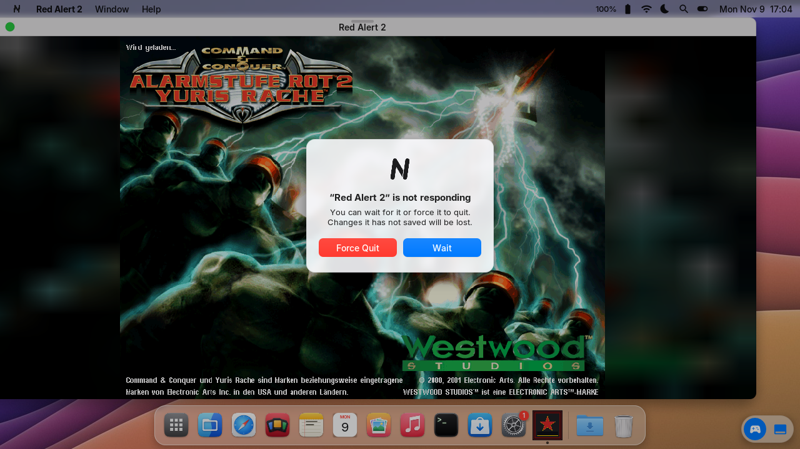
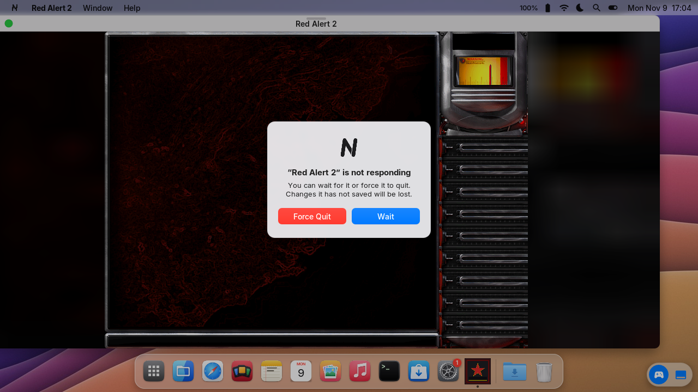
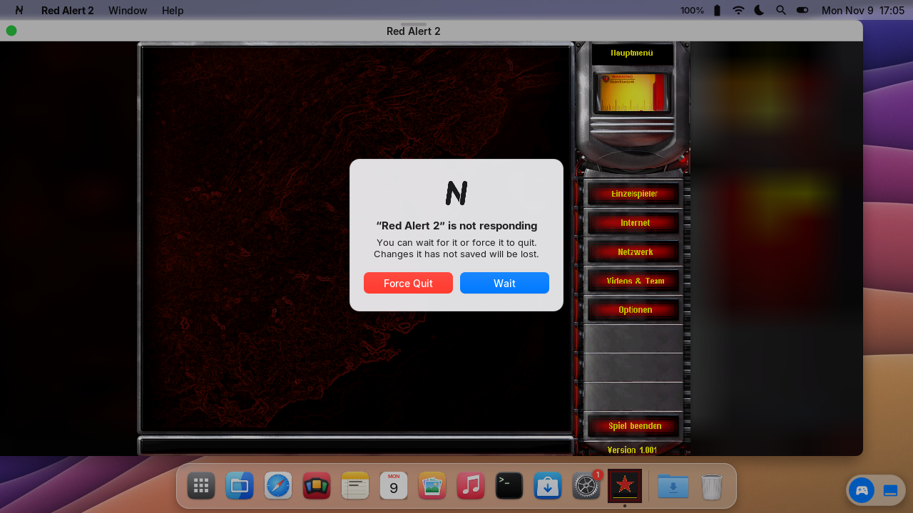
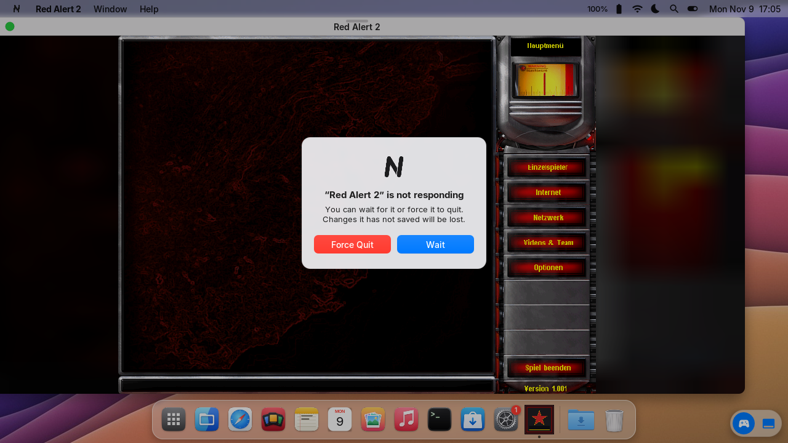

AŞAMA 1
Ana Menü ve Müzik Başlatma
Red Alert 2 ana menüsü açıldı. Hell March 2 fon müziği ve analog imleç aktif.

AŞAMA 2
Single Player Alt Menüsü
Single Player seçeneğine tıklandı; Campaign ve Skirmish modları listelendi.

AŞAMA 3
Skirmish (Çarpışma) Lobisi
Özel oyun lobisine giriş yapıldı. Harita, ülke ve yapay zeka bot parametreleri hazırlandı.
AŞAMA 4
Taktik Harita Yüklemesi
Harita yükleniyor; TacticalMap, Z-Buffer ve oyuncu birimleri belleğe aktarılıyor.

AŞAMA 5
Savaş Başladı (Battle Control Online)
Taktik haritaya iniş yapıldı. Oyuncunun MCV (Mobil İnşaat Aracı) ve koruma tankları sahada.

AŞAMA 6
İnşaat Merkezi Kuruldu (Deploy)
MCV açılarak İnşaat Merkezi kuruldu; sağ taraftaki inşaat ve üretim çubuğu (Sidebar) aktifleşti.
AŞAMA 7
Gerçek Zamanlı Çarpışma (52.8 FPS)
Taktik haritada aktif savaş yönetimi, bina inşaatı ve birim hareketleri akıcı şekilde sürüyor.